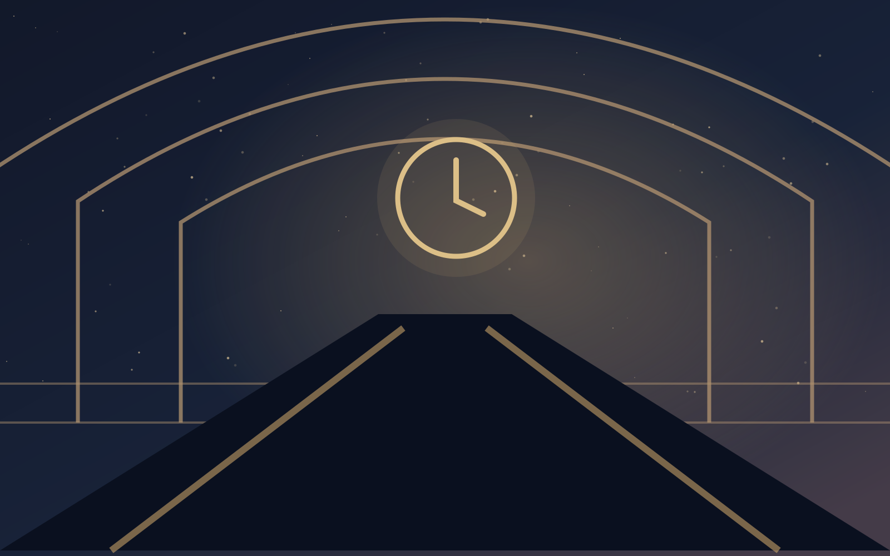

PROLOGUE - 00:07 · GARE DE VALLOMBRE
Le dernier train de minuit

À Vallombre, les horloges se sont toutes arrêtées à 00 h 07. Depuis sept nuits, le soleil ne se lève plus. Sur un quai désert, un train sans numéro t’attend, portes ouvertes. Dans ta poche, un billet porte trois mots écrits à la main : « Rends-nous demain. »
Cette nuit, chaque choix t’éloignera d’une vérité… et te rapprochera d’une fin différente.